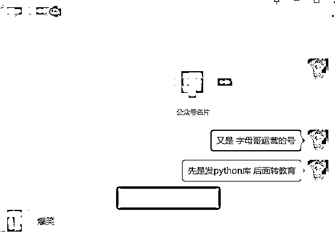
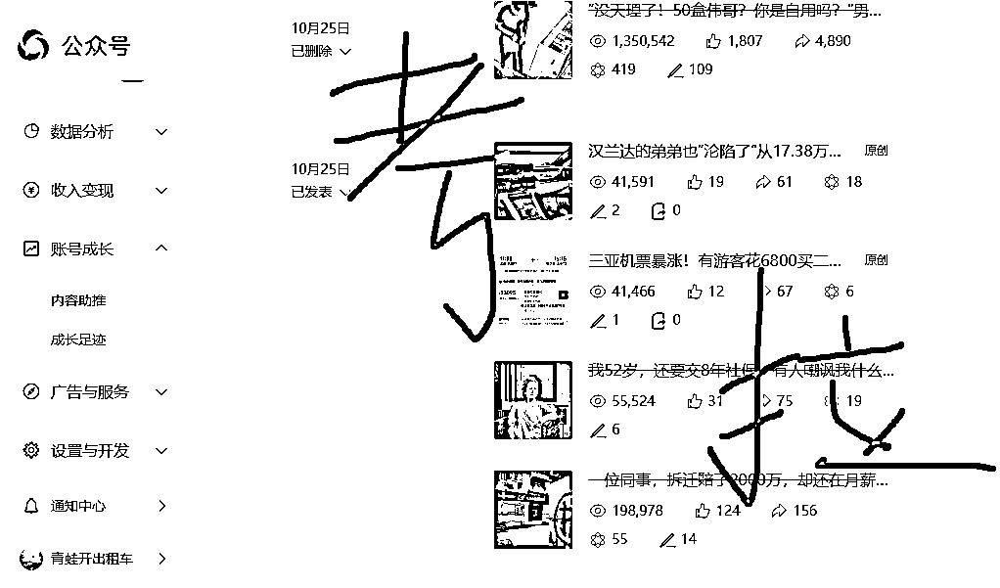
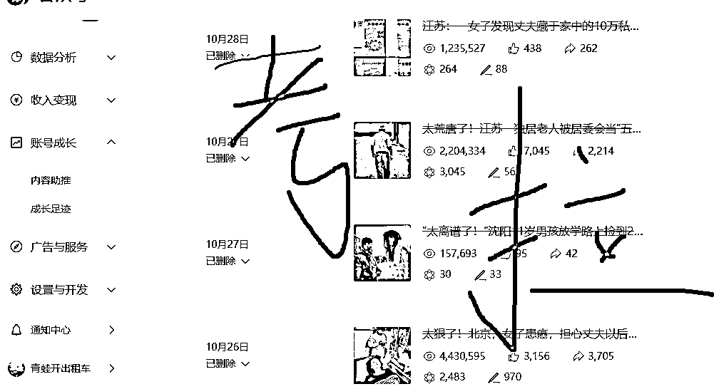
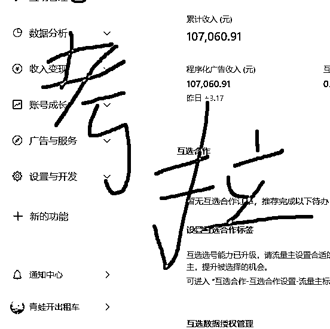
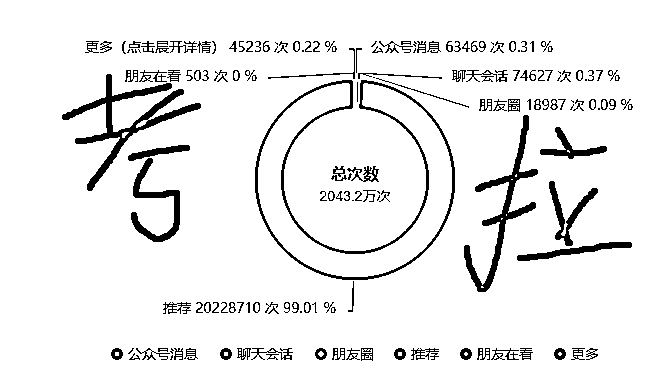
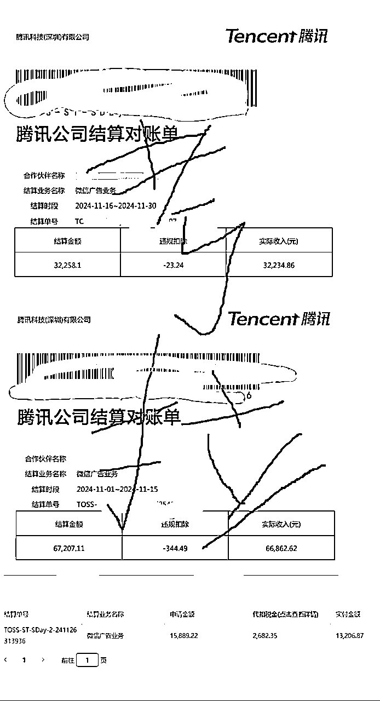

来源：https://jvzsmrqje5.feishu.cn/docx/Me8RdE8NPop79Gxr3AocgePDn9g
大家好，我是松鼠考拉，也是村长来了，做爆文的话，大家听到的是村长这个名字居多！今天写这篇文章算是对自己2024的一个复盘吧！陆陆续续做了1年的爆文，感受到了很多变化！自己相比去年同期，又增长了更多经验！
话不多说，直接切入正题：
在1月-3月份的时候自己20几个账号做过职场，情感，律文，生肖，只有律文跑出来了一个还可以的账号。写律文也是看了生财里面的帖子，然后自己随便弄了一下提示词，当时的账号叫小雨说法，如果在这个时间段做过律文的朋友应该会有印象，这个账号在3月25号噶了，总收益好像是3W多，记不清了，现在账号注销了收益图也没有保留！
当时我的玩法就是从次幂或者头条下载对标标题，然后复制对标文章当做投喂素材，加上提示词，给克劳德洗稿，
因为只有这一个号在赚钱，我每天都很精心的找选题，希望能活的久一点，
因为只有这一个号在赚钱，所以每天很焦虑，有流量的时候焦虑第二天没流量，没流量的时候焦虑赚不到钱！
后来这个号终于死掉了，我也释然了！
也终于明白公域流量决定权根本不在我这里，不管我多用心，一切还都是要看平台脸色！如果是做流量主收益，想要靠一个号一直赚钱是几乎不可能的事情！
3月份参加爆文航海，在航海群里，认识了很热心的兔子鱼教练，兔子给我说了很多爆文相关的东西！感觉人非常不错，通过兔子知道了猫哥的陪跑营，人在低谷的时候，急需加入一个组织，一同前行，坚持下去！在4月份加入了猫哥，再也不是自己单打独斗了！
这个阶段有很多人放弃了爆文，转做别的项目了，大家的数据也都很惨，我也摆烂了2个月！当时基本上没有什么信心了，也尝试了别的项目，基本都没什么起色，看猫哥还在坚持做，6月份的时候我又搞了起来，当时猫哥推荐大家搞教育，群友确实每天鸡血很足，我也做过一阵子，但是没做起来！
那时候复盘没做起来的原因是，我的账号都是做过一段时间的老号，之前发律文转的，这批号，之前全都在我自己的电脑上登录过，没做过ip隔离，怀疑是被风控了！当时大家的策略就是停更一段时间再转赛道，我用了没啥用，这个也看概率！现在总结就是 自己运气不好！
7月的时候，群里出现了一位单账号月入10W的群友，就是圈友llXX 我们都叫字母哥，他的账号真的太爆了，一般账号被很多人对标后 过一阵子就噶了，字母哥的账号被对标后依旧坚挺，后面又发现了字母哥的其他账号，也很爆，我就开始研究这些账号的共性，发现都是先发python然后在转赛道的！一个两个是偶然，多个的话感觉就是异常，

后来在群里也讨论了一下，我就开测试起来！
8-9月份之间，先开始小范围的测试，分别测试了 老号，新号，刷粉时机！转赛道时机！
因为我之前做过律文，对律文熟悉，知道哪些标题容易爆，所以转赛道后发的的文章都是律文
为什么是这么长的时间呢，因为公众号养号的周期就是比较长的，一般就是20天差不多，
期间遇到了很多问题，比如有推荐了刷粉账号立马就噶了，这种就很浪费时间，
那我的策略就改成了 在一开始的时候就刷上粉！
养号发20多天都是0怎么办？我的策略是尝试转一下赛道，如果发一周还是0就注销从来！
9月份的时候测试出来有几个号，转了之后就爆了，一篇文章赚2k，但是爆了后账号立马就死掉了，这就是大家常说的一波流！我觉得一波流就一波流，如果起号几率很高那么一波流能赚几K也很香！
老号发了一段时间很难起来，我就都注销了
转赛道时机：最好发2周，数据很爆的话10天也行，连续3天都是几十推荐，我觉得就是很好的账号！
7天以内有推荐，转的成功率比较低，我自己测试是这样子！一般发20天以上会更稳妥一些！
如果都是个位数的推荐，发到20天也尝试转一下，反正都是概率，有推荐的号就尝试一下
也有发20天全是0推荐的号也转成功过！
和朋友说了一下我的思路，朋友帮我搞定账号我来负责运营！慢慢的加到了50个号的时候，时间来到了10月下旬
我转了几个号感觉都是一波流了，打算要放弃了，然后就开始混着发，一天发了4个赛道的文章，没想到其中有个号竟然非常的爆！青蛙开出租车！

看到律文数据很好，所以就打算做律文方向了！在接下来的一周里每天都是几百万阅读

8天赚了10W块然后流量趋于平静，好像10W就是一个门槛！现在这个号已经掉池了！
附上收益

同期也有几个做的不错的群友，基本上都是py养号一段时间再转赛道，现在这个玩法基本上只要做公众号人尽皆知！现在也还能看到先发python在转律文的号，
由于律文有一些风险，再加上越来越多的人卷律文，单价变得很低，后面就没有在做律文了！

后面群友复盘为什么我的账号能这么爆，一方面是因为这个赛道在3月25之后，没有多少人在做了，不太卷，另一方面是赶上了双十一，广告主投放，这些奇葩社会事件，本身就自带爆文属性，所以更容易获得大的流量！一切都是天时地利人和的结果！
当我做出成绩后，很多人都愿意把号给我让我运营，在这里说一下现在主流的两种运营模式，
代运营：我来提供生产好的文章给号主，号主发自己的账号上面，收益和号主6，4分
全托管：号主只需要注册好账号，然后设定我的微信为公众号的管理员，后面基本就不会有号主什么事情了，我来选题，产文，发文，有收益了就绑定我的公户，这种我分8成，号主躺赚2成
我自己更喜欢全托管这种模式，因为这种模式不需要每天和代运营沟通，我认为沟通是个很浪费时间精力的事情，而且还需要进行账号指导！全托管的话每个账号我自己会给出不同的运营策略，精细化运营，更高效！
做的时间越久，越觉得公众号爆文是一个博概率的游戏，运气成分很重要，策略只是锦上添花的东西！
首先要有足够多的账号，我觉得100个就足够了，只要号主能配合注销在重新注册，理论上我就能有源源不断的账号！
起号阶段基本上和我上面说的差不多，大部分账号一波流，只要有推荐我都会更新，
每天都要刷看一看，保持自己对热点的嗅觉，新号转赛道前3天尤为重要，所以这3天要发近期比较热门容易爆的文章，这个就靠自己的网感！有些账号爆了之后迅速000，这种就直接注销，不要浪费时间！
有些账号是每天都有几十几百，但是不会大爆，这种其实是非常难受的，因为只能熬，熬几个月才有可能开始赚钱
我有个体育号就是这样，前2个月发汽车，每天都有推荐但是不大爆，然后奥运会的时候转了体育开始有了流量，但是这种号也不会大爆，就每天几万流量，单价万100，每天给100到200左右，现在也慢慢的赚了2.5W，
如果能做出十几二十个这种低保号，也能赚很多钱，所以我设计了一套账号筛选的策略，每个账号都有自己的命运，这个命运是算法决定的，我要做的就是不断的测试，看这个账号适合什么赛道！有时候我会一天发三四个赛道
发几天看看哪个赛道有流量，后面慢慢的测试出来适合这个账号的赛道，如果都没流量，也会注销！
根据这个策略 11月份也赚了10W多。

从单兵作战到团队作战的转变，
现在我专注于选题和产文，发文的工作交给助理在弄，朋友帮我找号。
初次带人，也遇到了很多问题，发现了自己的很多短板！沟通问题，懒惰，
很多事情以为交给员工自己就能躺平了，后面发现交给员工的账号数据很差，
立场不同，员工并不会像我一样，根据账号数据来优化内容，后面我自己也还是要每天看每个账号的数据情况
给出发文的策略！打工的时候不喜欢写日报，当我成为老板后，也会要求员工每天给我统计账号的数据！
员工是打工人的心态，只想着我今天发完这些拿到钱就好了！并不会对收益负责！而爆文赚钱是非常要靠题材的！有时候碰到一个热点一篇文章爆几百万赚大几万块，这都需要运气！在这个运气来临之前自己也是要做充足的准备，比如账号数量够不够，运营策略这些东西！
多账号一定是要用到ip隔离+指纹浏览器的，我也是这样，现在天翼云越来越严格，我觉得几百个号的话，用天翼云搭建很麻烦，所以我自己找的ip平台直接购买ip，指纹用的比特！
我看到很多人都去查ip是不是数据中心，我是从来不管他是不是数据中心，买来直接用，我觉得这个是玄学的东西，应该把更多的精力用在拉人加号，挖掘选题上面，因为我们并不能知道腾讯他的风控是怎样的，而且我数据中心的IP也有起来的账号！
回顾自己从23年9月份参加航海到现在一路升级打怪，期间经历过今年4-5月份的行业低谷，也经历了自己单日470W阅读，日赚2.7W的高光时刻！这就是人生吧，起起落落！一个人不可能永远都在低谷！一切都是周期！只要不下牌桌，总会等来属于自己的机会！